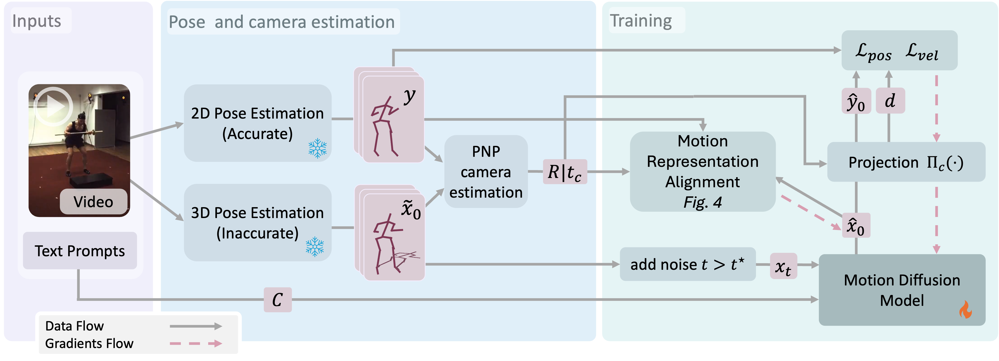
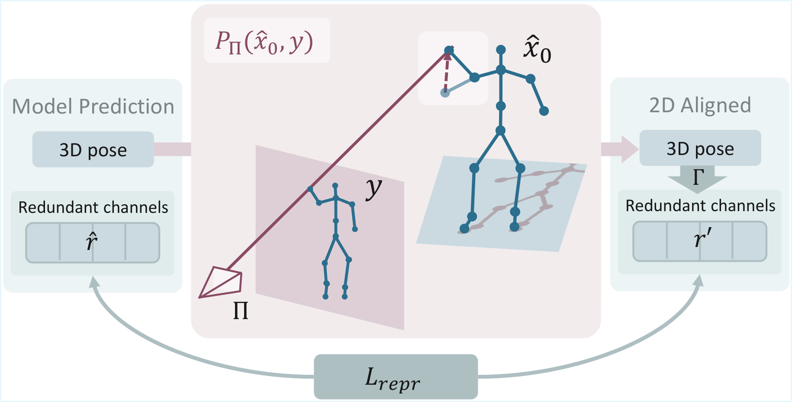

1Technion — Israel Institute of Technology 2NVIDIA
We introduce VideoMDM, a diffusion-based framework that trains 3D human motion priors directly from accurate 2D poses extracted from monocular videos, without any 3D ground truth. A pretrained 2D-to-3D lifter provides approximate 3D pose sequences that serve as a noisy teacher: these are diffused, denoised by the model in 3D, and supervised in 2D by reprojecting the prediction and comparing against accurate keypoints. We show that, under mild assumptions, a depth-weighted 2D reprojection loss is equivalent in expectation to direct 3D supervision, and we adapt standard 3D motion regularizers — velocity consistency and over-parameterized representation alignment — to this 2D setting. Unlike methods that lift 2D to 3D only at inference, VideoMDM learns a coherent 3D motion manifold during training. On HumanML3D it nearly closes the gap to fully 3D-supervised MDM (FID 0.88 vs 0.54); on real video datasets Fit3D and NBA the method learns to generate motions consistently preferred by humans, with strong quantitative results.
We are given monocular human-motion videos with accurate 2D joint trajectories but no 3D ground truth. A pretrained 2D-to-3D lifter produces approximate 3D pose sequences that serve as a noisy teacher. As in standard diffusion training, we diffuse these lifted 3D estimates and train a denoiser to recover the clean 3D motion — but supervision is applied entirely in 2D by reprojecting the prediction and comparing against the accurate keypoints.
A depth-aware weighting of the reprojection loss is, under mild assumptions, provably equivalent in expectation to direct 3D MSE supervision. We further adapt two standard 3D motion regularizers: a depth-weighted 2D velocity loss for temporal coherence, and a representation alignment loss that supervises the over-parameterized motion channels — joint rotations, velocities, and foot contacts — via ray-projection pseudo-targets derived from the predicted motion and the observed 2D keypoints.


To isolate the effect of 2D supervision from pose-estimation noise, we construct a 2D-only version of HumanML3D by projecting MoCap sequences to random cameras and lifting them back with a pretrained lifter. VideoMDM is trained using only these 2D projections and evaluated against the 3D MoCap ground truth.
FID 0.88 · 3D-supervised MDM achieves 0.54| Prompt | MDM on MVLift | VideoMDM (Ours) |
|---|---|---|
| "a person waves with his right hand." | ||
| "the person walks backwards in a straight line." |
VideoMDM is fine-tuned on Fit3D — real monocular fitness videos with no 3D supervision — using WHAM as the noisy teacher lifter. The fitness exercises (deadlifts, mule kicks, push-ups) are far outside the distribution of any MoCap-based lifter, directly testing the framework's ability to learn motions the teacher has never seen.
| Exercise | WHAM Lift | MDM on WHAM | VideoMDM (Ours) |
|---|---|---|---|
| Deadlifts | |||
| Diamond push-ups | |||
| Barbell dead rows |
For extended randomly sampled comparisons across all methods and datasets, see the full supplementary →
@article{mann2026videomdm,
title = {VideoMDM: Towards 3D Human Motion Generation From 2D Supervision},
author = {Mann, Amir and Harari, Gal and Keidar, Merav and Litany, Or},
year = {2026}
}